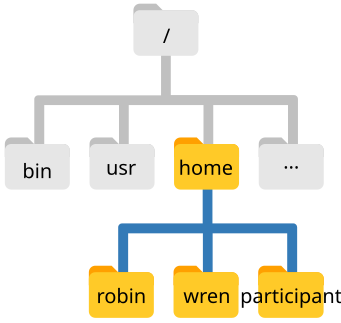

2 Nawigacja w systemie plików (Navigating the filesystem)
- Zrozumieć hierarchiczną strukturę systemu plików oraz sposób określania lokalizacji zasobów.
- Odróżniać ścieżki bezwzględne (absolute paths) od ścieżek względnych (relative paths).
- Rozpoznawać znaczenie ukośnika
/jako katalogu głównego (root) oraz jako separatora ścieżek. - Sprawnie poruszać się w drzewie katalogów przy użyciu poleceń
pwd,lsorazcd. - Poznać standard nazewnictwa produktów misji satelitarnej Sentinel-2 (
.SAFE). - Wykorzystywać symbole wieloznaczne (wildcards, np.
*,?) do operacji na grupach plików satelitarnych i telemetrycznych. - Korzystać z polecenia
finddo wyszukiwania plików i katalogów według kryteriów.
2.1 System plików w systemie Unix
Część systemu operacyjnego odpowiedzialna za zarządzanie plikami i folderami to system plików (filesystem). Organizuje on dane w pliki oraz katalogi (foldery), które mogą zawierać pliki lub inne podkatalogi. Struktura ta jest hierarchiczna i można ją przedstawić w postaci odwróconego drzewa.

Na powyższym schemacie widzimy katalogi domowe trzech użytkowników: robin, wren oraz participant (reprezentujący nasze konto szkoleniowe). Wszystkie katalogi użytkowników znajdują się wewnątrz folderu home. Z kolei folder home znajduje się w tzw. katalogu głównym systemu (root directory), oznaczanym pojedynczym ukośnikiem /. Katalog główny to najwyższy poziom w hierarchii całego systemu operacyjnego (nie można wyjść „wyżej” niż /).
W wierszu poleceń wskazujemy pliki i katalogi za pomocą ich „adresu”, czyli ścieżki (path). Sprawdźmy naszą bieżącą pozycję w systemie za pomocą polecenia pwd (print working directory – wypisz katalog roboczy):
pwd/home/participantW odpowiedzi system wyświetla /home/participant – jest to nasz katalog domowy (home directory), otwierany domyślnie po uruchomieniu nowego terminala.
participant to nasza nazwa użytkownika (username).
Zwróćmy uwagę na konstrukcję ścieżki: - / na samym początku oznacza katalog główny systemu (root). - home to nazwa podkatalogu w katalogu głównym. - Kolejny / pełni rolę separatora między katalogami. - participant to docelowy katalog w tej ścieżce.
/
Znak ukośnika / na samym początku ścieżki oznacza katalog główny systemu (root). Znak / umieszczony wewnątrz ścieżki pełni rolę separatora oddzielającego poszczególne poziomy katalogów.
Format ścieżki katalogu domowego zależy od systemu operacyjnego: - Linux: /home/nazwa_uzytkownika - macOS: /Users/nazwa_uzytkownika - Windows: C:\Users\nazwa_uzytkownika (w terminalach uniksowych, np. WSL/Git Bash: /c/Users/... lub /mnt/c/Users/...)
2.2 Wyświetlanie zawartości katalogów (ls)
Aby zobaczyć listę plików i katalogów w bieżącym miejscu, używamy polecenia ls (list):
lsDesktop Documents Downloads dane_do_cwiczenNasz rozpakowany pakiet danych satelitarnych znajduje się w folderze dane_do_cwiczen.
Możemy wylistować jego zawartość, przekazując ścieżkę jako argument do ls:
ls ~/Desktop/dane_do_cwiczenREADME.txt cloud_cover_reports landsat_scenes raw_telemetry_chunks sources.txt
sentinel2_scenes gnss_stations orbital_catalog scripts_repo telemetry_logsPrzydatne flagi polecenia ls: - ls -l – format szczegółowy (long format): wyświetla uprawnienia, liczbę dowiązań, właściciela, grupę, rozmiar w bajtach oraz datę modyfikacji. - ls -lh – rozmiar w czytelnych jednostkach (human-readable, np. KB, MB, GB). - ls -a – pokazuje wszystkie pliki, łącznie z ukrytymi (zaczynającymi się od kropki .). - ls -t – sortuje pliki według czasu modyfikacji (najnowsze na początku).
2.3 Zmiana katalogu roboczego (cd)
Do zmiany bieżącego katalogu służy polecenie cd (change directory), po którym podajemy ścieżkę do katalogu docelowego:
cd ~/Desktop/dane_do_cwiczen/Wpiszmy pwd, aby upewnić się, że jesteśmy w katalogu z danymi:
pwd/home/participant/Desktop/dane_do_cwiczenJeśli chcemy wejść głębiej, np. do podkatalogu ze scenami satelitarnymi sentinel2_scenes, używamy ścieżki względnej:
cd sentinel2_scenesWyróżniamy dwa sposoby podawania ścieżek:
- Ścieżka bezwzględna (absolutna) – zaczyna się od ukośnika
/i definiuje pełną trasę od samego korzenia systemu plików (root). Niezależnie od tego, w jakim katalogu aktualnie się znajdujemy, dana ścieżka bezwzględna zawsze wskazuje dokładnie to samo miejsce. - Ścieżka względna (relatywna) – nie zaczyna się od
/i wskazuje lokalizację w odniesieniu do naszego bieżącego katalogu roboczego.
2.3.1 Przechodzenie do katalogu nadrzędnego (..)
Aby cofnąć się o jeden poziom w górę (do katalogu nadrzędnego – parent directory), używamy specjalnego oznaczenia ..:
cd ..Wpisanie pwd potwierdzi, że wróciliśmy do dane_do_cwiczen.
Nazwy produktów satelitarnych bywają bardzo długie, np. S2A_MSIL2A_20240510T100031_N0510_R122_T33UWT_20240510T140000.SAFE.
Wpisywanie ich ręcznie byłoby uciążliwe i podatne na literówki.
Wpisz cd sentinel2_scenes/S2A_ i naciśnij klawisz Tab ⇥. Powłoka automatycznie dopełni unikalną nazwę katalogu!
2.4 Nazewnictwo produktów i plików misji Sentinel-2
W inżynierii danych satelitarnych kluczową umiejętnością jest szybkie odczytywanie parametrów sceny z samej nazwy pliku lub katalogu. Standard pakowania danych misji programu Copernicus nosi nazwę SAFE (Standard Archive Format for Europe).
Spójrzmy na przykładowy produkt w katalogu sentinel2_scenes/:
S2A_MSIL2A_20240510T100031_N0510_R122_T33UWT_20240510T140000.SAFEKażdy człon nazwy oddzielony znakiem podkreślenia _ niesie precyzyjną informację techniczną:
| Segment | Przykład | Opis |
|---|---|---|
| Identyfikator misji | S2A / S2B / S2C |
Satelita Sentinel-2A, Sentinel-2B lub Sentinel-2C. |
| Typ produktu i poziom | MSIL2A (lub MSIL1C) |
Sensor MSI (MultiSpectral Instrument), Poziom L2A (reflektancja powierzchniowa BOA po korekcji atmosferycznej) lub L1C (reflektancja na górnej granicy atmosfery TOA). |
| Czas rejestracji (UTC) | 20240510T100031 |
Moment pozyskania danych: 10 maja 2024 r., godz. 10:00:31 UTC. |
| Wersja przetwarzania | N0510 |
Processing Baseline (tutaj wersja 05.10 algorytmów ESA). |
| Względny numer orbity | R122 |
Numer ścieżki orbitalnej (Relative Orbit, 001–143). Pozwala identyfikować powtarzalne przeloty nad tym samym obszarem. |
| Identyfikator kafelka | T33UWT |
Kod kafelka siatki MGRS (Military Grid Reference System). Np. T33UWT to obszar Wrocławia i Dolnego Śląska, a T34UCA to Warszawa i Mazowsze. |
| Czas wygenerowania | 20240510T140000 |
Znacznik czasu wyprodukowania paczki w centrum przetwarzania danych (Product Discriminator). |
| Rozszerzenie | .SAFE |
Katalog główny produktu zawierający metadane i rastry. |
2.4.1 Wewnętrzna struktura katalogu .SAFE
Wewnątrz katalogu .SAFE znajduje się standaryzowana struktura podfolderów:
S2A_MSIL2A_..._T33UWT_....SAFE/
├── manifest.safe # Główny manifest XML opisujący zawartość paczki
├── MTD_MSIL2A.xml # Globalne metadane produktu (kąty słońca, zachmurzenie, jakość)
├── GRANULE/
│ └── L2A_T33UWT_.../ # Pojedynczy kafelek (Granule)
│ ├── IMG_DATA/ # Obrazy rastrowe w formacie JPEG2000 (.jp2)
│ │ ├── R10m/ # Kanały o rozdzielczości 10 m (B02 Blue, B03 Green, B04 Red, B08 NIR, TCI)
│ │ └── R20m/ # Kanały o rozdzielczości 20 m (B05-B07 Red Edge, B8A, B11-B12 SWIR, SCL)
│ └── QI_DATA/ # Wskaźniki jakości (Quality Indicators), maski chmur (GML)Dzięki znajomości tej konwencji, inżynier danych może za pomocą prostych poleceń powłoki odnaleźć np. wyłącznie sceny dla Wrocławia o porannej porze przelotu.
2.5 Symbole wieloznaczne (Wildcards)
Symbole wieloznaczne (wildcards) umożliwiają jednoczesne wskazywanie wielu plików pasujących do określonego wzorca:
*(gwiazdka) – dopasowuje zero lub dowolną liczbę znaków.ls telemetry_logs/ground_station_SVB_*.log– wszystkie logi stacji Spitsbergen (Svalbard).ls cloud_cover_reports/*.csv– wszystkie raporty zachmurzenia w formacie CSV.ls sentinel2_scenes/S2A*– wszystkie produkty pozyskane przez satelitę Sentinel-2A.ls sentinel2_scenes/*_T33UWT_*.SAFE– wszystkie produkty dla kafelka Wrocławia (T33UWT).
?(pytajnik) – dopasowuje dokładnie jeden dowolny znak.ls cloud_cover_reports/poland_sentinel2_202?.csv– dopasuje raporty dla lat 2020-2029 (np.2022,2023i2024).ls gnss_stations/????– dopasuje 4-literowe kody stacji GNSS (np.WROC,JOZE,KRAK,LODZ,GDAN).
Gdy powłoka napotka symbol wieloznaczny, najpierw rozwija go do listy pasujących plików, a dopiero potem przekazuje tę listę jako argumenty do uruchamianego programu.
2.6 Wyszukiwanie plików (find)
Polecenie find umożliwia rekurencyjne przeszukiwanie drzewa katalogów według nazw, typów i właściwości.
Przykładowo, aby wyszukać wszystkie pliki kanałów bliskiej podczerwieni (*B08*.jp2) w całym pakiecie danych satelitarnych:
find sentinel2_scenes -type f -name "*B08*.jp2"sentinel2_scenes/S2A_MSIL2A_20240510T100031_N0510_R122_T33UWT_20240510T140000.SAFE/GRANULE/L2A_T33UWT_A.../IMG_DATA/R10m/T33UWT_20240510_B08_10m.jp2
...Znaczenie poszczególnych elementów: - sentinel2_scenes – ścieżka startowa wyszukiwania. - -type f – szukaj wyłącznie zwykłych plików (files). Dla katalogów użylibyśmy -type d (directories). - -name "*B08*.jp2" – wzorzec nazwy pliku w cudzysłowie.
.SAFE– standard pakowania produktów misji ESA Copernicus Sentinel..xml– pliki metadanych (np. parametry kalibracji, zachmurzenie, kąty słońca)..jp2– JPEG2000 (standard kompresji rastrów satelitarnych)..tif/.geotiff– powszechny format rastrowy danych geoprzestrzennych..nc/.hdf5– formaty macierzowe dla danych atmosferycznych, oceanograficznych i radarowych..csv/.tsv– raporty tabelaryczne, katalogi TLE, specyfikacje pasm..log/.log.gz– dzienniki stacji naziemnych i odbiorników GNSS (oraz ich archiwa skompresowane).
2.7 Ćwiczenia
2.8 Podsumowanie
- Drzewo katalogów systemu Unix rozpoczyna się od katalogu głównego
/(root). - Ścieżki bezwzględne zaczynają się od
/, natomiast ścieżki względne odnoszą się do bieżącego katalogu roboczego (pwd). .oznacza katalog bieżący,..katalog nadrzędny, a~katalog domowy użytkownika.- Nazwy produktów Sentinel-2 (
.SAFE) kodują platformę (S2A/S2B), poziom (L1C/L2A), datę/czas, orbitę (Rxxx) oraz kafelek siatki MGRS (Txxxxx). - Symbole wieloznaczne
*oraz?umożliwiają elastyczne wybieranie grup plików satelitarnych i telemetrycznych. - Polecenie
findpozwala błyskawicznie lokalizować pliki w głębokich strukturach folderów produktów satelitarnych.